欣賞完草養島韓國美麗的道路後, 算一算, 已經穿越了三千浦大橋、草養大橋兩道大橋, 跨越了慕開島、草養島兩個島嶼, 看看地圖, 剛好走了一半的路程, 沿途風景實在太美, 不覺路途遙遠。
南海郡 勒島大橋 (늑도대교)
繼續慢慢向前走, 迎面是連接草養島和勒島的勒島大橋。勒島大橋是幾道大橋中設計最平凡的, 但卻方便眺望四周和橋下景色, 如果不是這設計, 便很難俯瞰草養島和勒島兩邊的漁港。
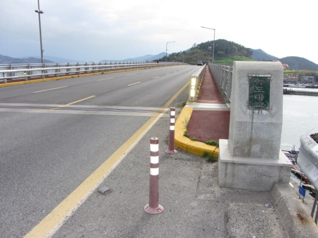
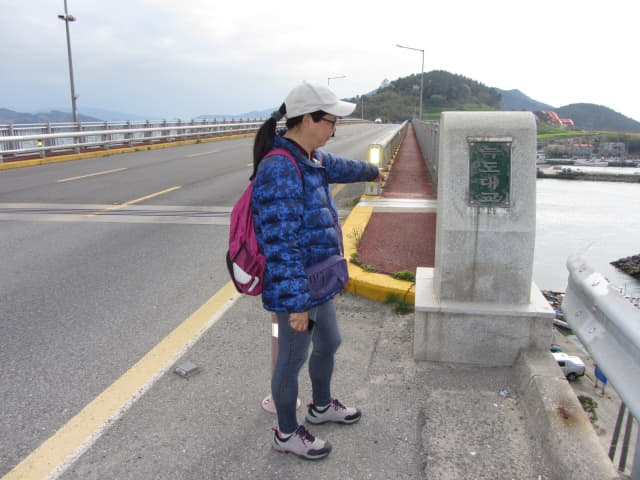
走上勒島大橋, 就離開了草養島。
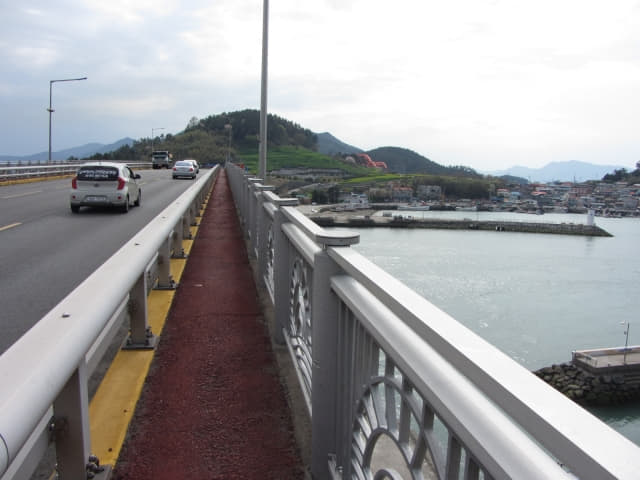
從橋上俯瞰草養島海邊散落山坡中的漁港村落, 十分樸素。
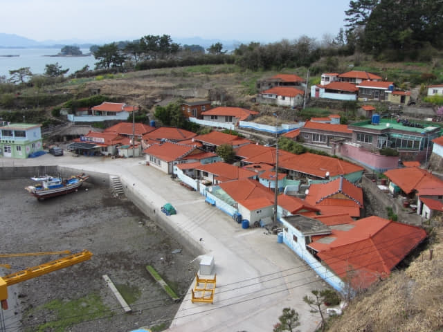
繼續沿勒島大橋往前走。
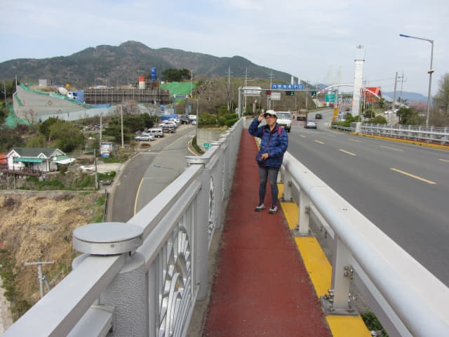
草養島的漁港村落真是很美。
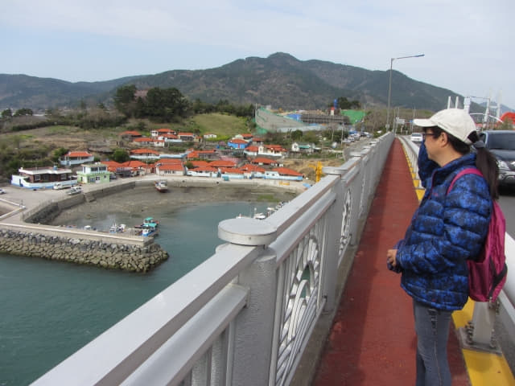
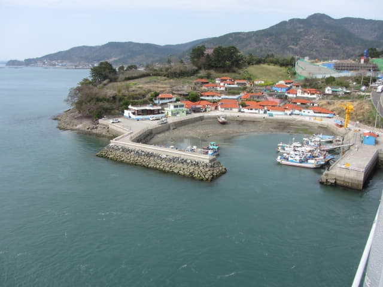
前面便是勒島, 也是一個美麗漁港, 面積比慕開島和草養島大很多, 房子也多一些, 島上還有一間教堂。
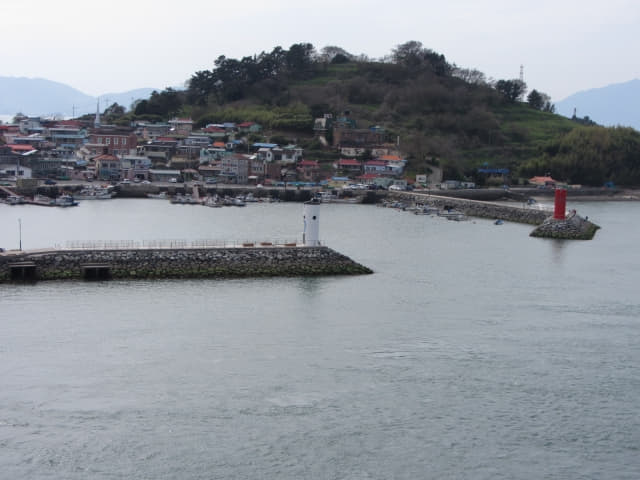
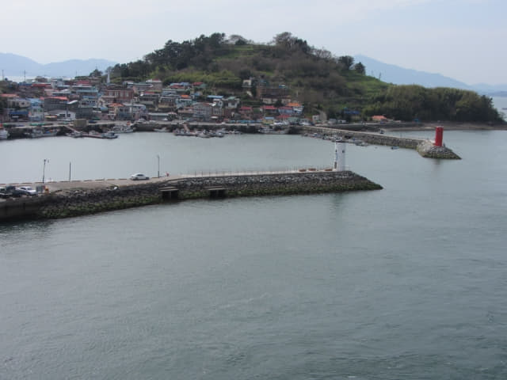
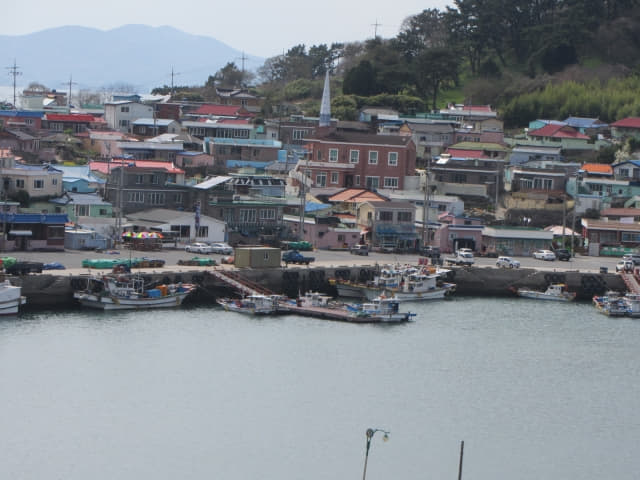
再回頭望望草養島, 漁村真是細很多。
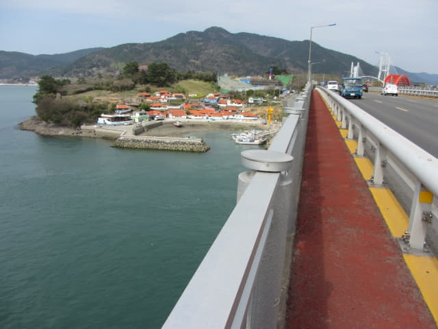
南海郡 勒島 (늑도 Neukdo)
走過南海郡勒島大橋, 便來到勒島, 一個風景非常漂亮的小島。
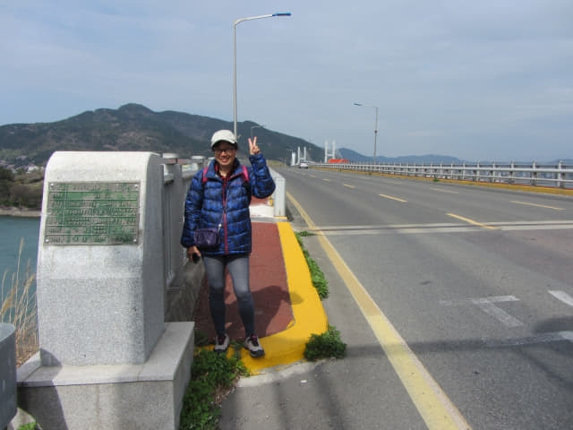